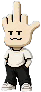

F
☆☆
KUN
HOME
ABOUT
WORLD
PET ROOM
GALLERY
SHOP
NEWS
✦ SOUND OFF 〽
DON'T FAKE IT.
F
☆☆
KUN
自分らしく生きる、反骨のピクセル。
F☆☆KUNは、常識や偽りに縛られない。
クールで、無表情で、どこか憎めないヤツ。
今日もマイペースに、好きなように生きてる。
PET ROOMへ入る →
F☆☆KUNについて ›
SCROLL
⌂
PET ROOM
F☆☆KUNと一緒の時間
🍔 FOOD
78
/100
♥ LOVE
86
/100
ϟ ENERGY
62
/100
★
STAR
1,250
☰ MENU
DON'T
FAKE
IT.
F☆☆KUN
よう。
今日も自分らしくいこーぜ。
🍔
FEED
ごはんをあげる
−20 ★
✋
PET
なでる
+10 LOVE
🎮
PLAY
いっしょに遊ぶ
−15 ENERGY
🛏
SLEEP
寝かせる
+ ENERGY
★
DAILY STAR
★をもらう
1日1回
⌂ WHAT'S NEW
NEW
・F☆☆KUNの公式サイトがオープン！
・PET ROOMで一緒に過ごせるようになった。
・これからも色んなことが起こるから見逃すなよ。
⌂ GALLERY
⌂ FOLLOW F☆☆KUN
𝕏
◎
♪
▶
F☆☆KUNをシェアする ⌯